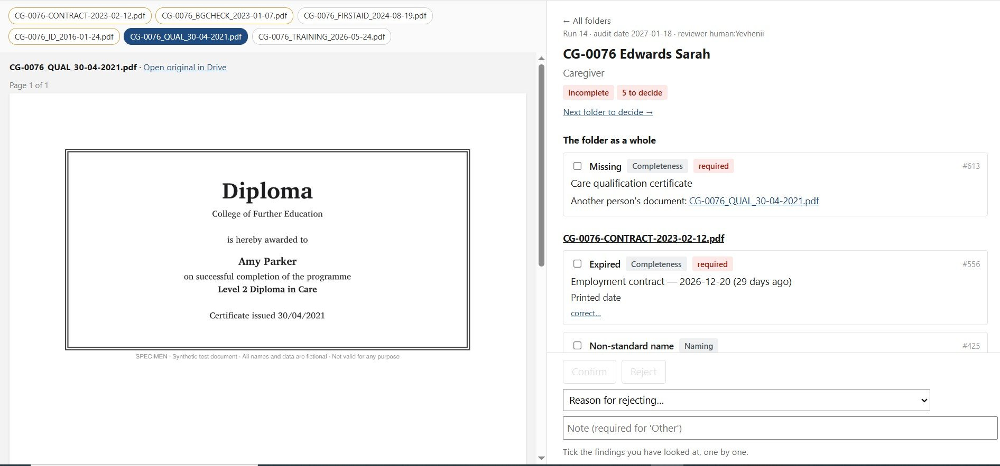
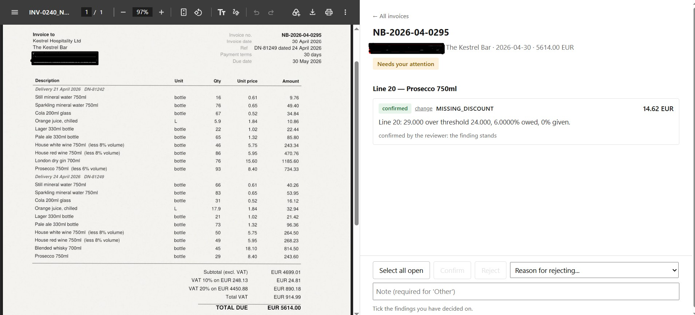
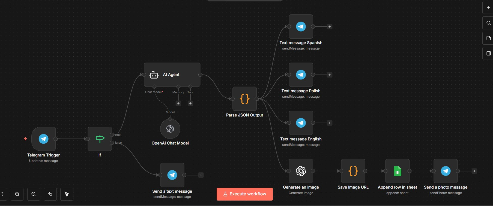
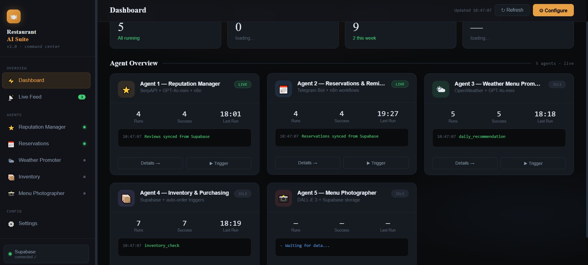
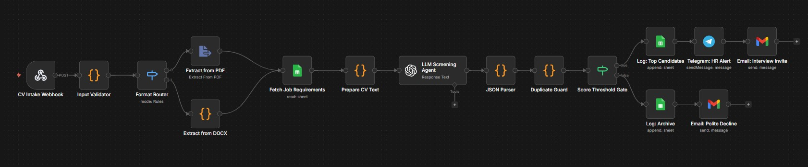
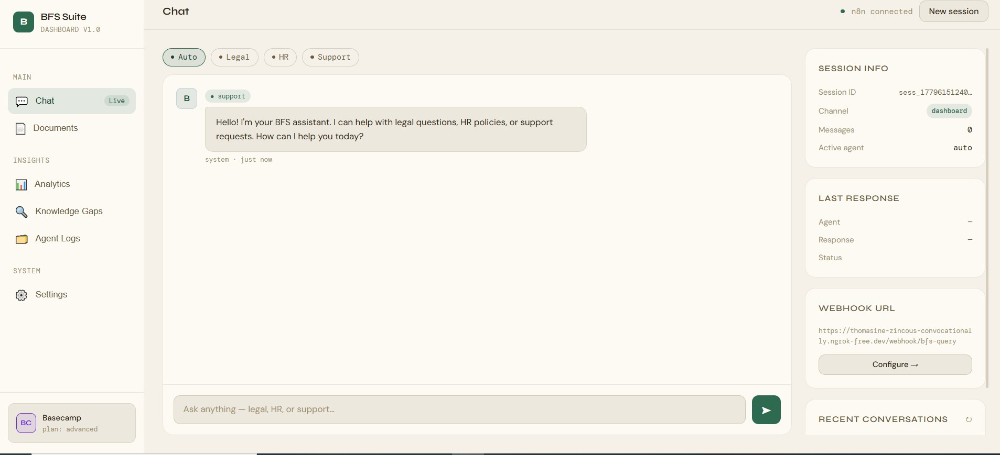
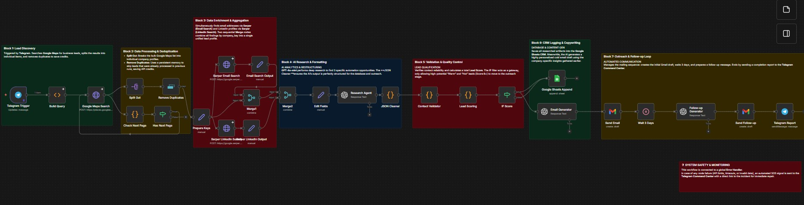

Built end to end, with error handling, monitoring and documentation. Two of them measured against problems planted in advance.

Care agencies, construction firms and staffing agencies keep a folder for every person: IDs, contracts, certificates, care plans. The costly mistake is not an incomplete folder — it is a folder everyone believed was complete. Osprey reads every document in your Google Drive folders, recognises each one by what is on the page rather than what the file is called, and tells you, person by person, what is missing, what has expired, what is about to, and what belongs to someone else. And like Kestrel, it is measured: two batches of folders with problems planted and recorded in advance — the second generated after the system was frozen.
The folders are synthetic and every name is fictional. The second batch included 13 document layouts the system had never seen: 109 of 110 — the one left over went to a person, not missed.

Most invoice checking systems tell you how many discrepancies they found. None tell you how many they missed — and a missed invoice leaves no trace. So this one was built backwards: first a batch of 260 invoices with 98 errors planted and recorded on purpose, then the pipeline that gets measured against that record. Extraction, arithmetic, contract pricing, reconciliation and a human review screen — with a number attached to every claim.
The invoices are synthetic. That is what makes the number possible: with real documents nobody knows the right answer in advance — if they did, the checking would be unnecessary.

A fully automated content generation system triggered by a single Telegram message. The agent takes a topic idea and produces a complete multilingual content package in seconds — no manual writing, no switching between tools, no copy-paste between languages.

A complete AI automation suite for restaurant operations — five independent agents that work together to protect reputation, fill tables, boost sales, control inventory, and create stunning food visuals. Each agent can be deployed individually or as a complete system.

A 3-workflow automation that turns incoming CVs into structured, ATS-ready data — intake, parsing, and handoff. It does not score, rank, or recommend candidates; hiring decisions stay with your team.

An enterprise-grade multi-agent customer support platform scaled for small businesses. Three specialized AI agents — Legal, HR, and Customer Support — powered by Retrieval-Augmented Generation (RAG) with your company's own knowledge base. Includes intelligent routing, gap detection, and a full analytics dashboard.

A 7-block B2B lead generation and outreach pipeline. Triggered by a single Telegram message, it discovers businesses, enriches contact data, scores leads with AI, writes personalized cold emails, sends them, and follows up.
Every project starts with a 30-minute conversation about the problem. Let's have yours — it's free.